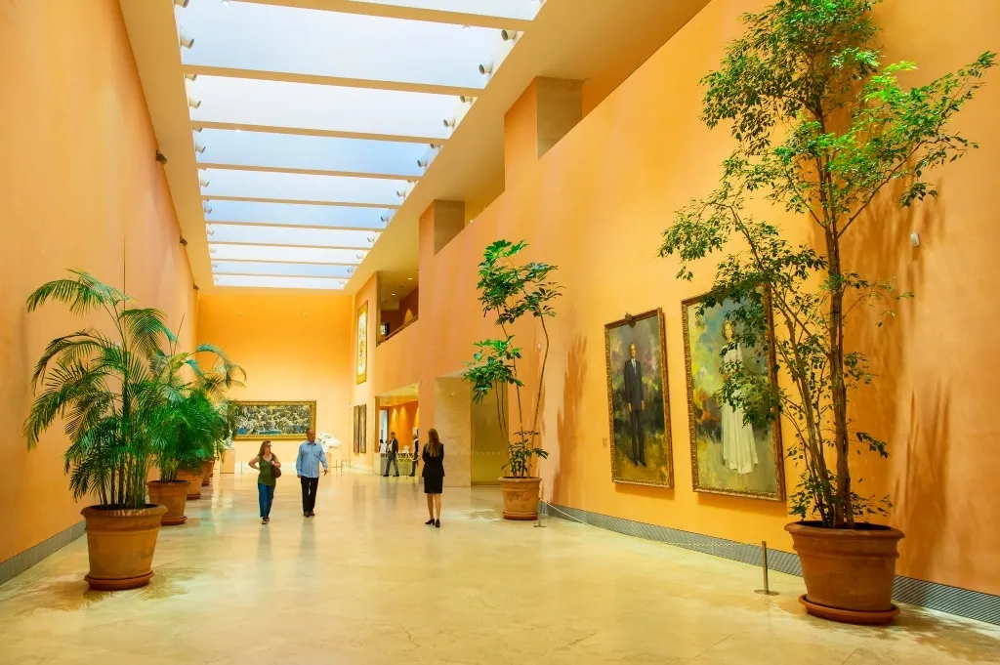
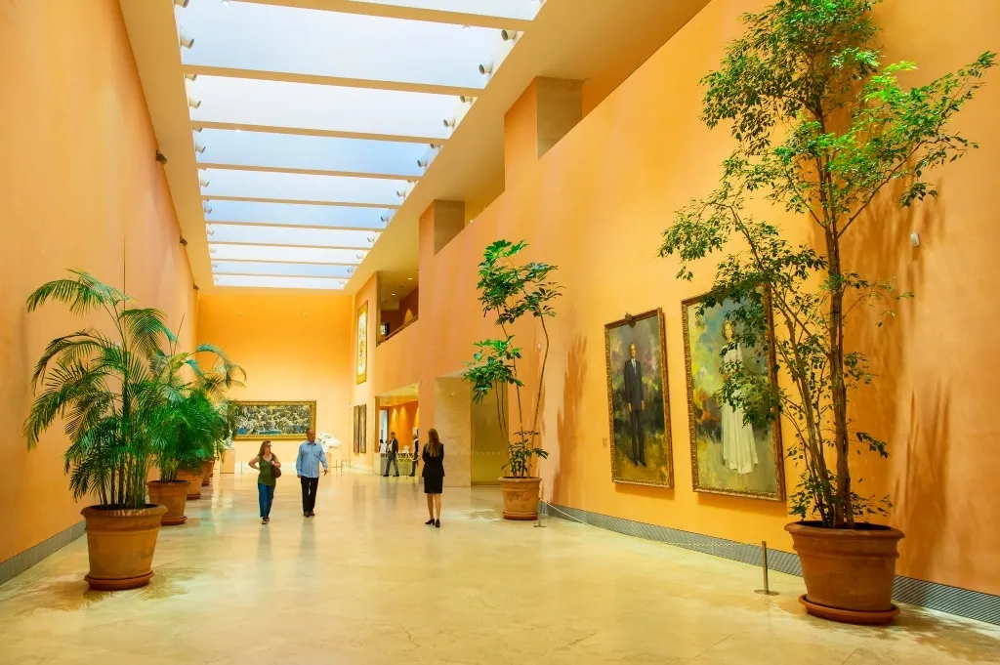

Le trésors artistiques à Madrid : Thyssen-Bornemisza
 

Tradition et Modernité

Le musée Thyssen-Bornemisza de Madrid est un joyau culturel qui enchante les visiteurs avec sa collection d'art éclectique et fascinante. Situé au cœur de la ville, ce musée renommé est une visite incontournable pour les amateurs d’art du monde entier. Créé à partir de la collection privée de la famille Thyssen-Bornemisza, le musée abrite un large éventail d'art du XIIIe siècle à l'art contemporain. Ses collections sont un voyage à travers l’histoire de l’art, offrant aux visiteurs une expérience immersive et enrichissante. Il s'agit notamment de chefs-d'œuvre de maîtres célèbres tels que Van Eyck, Dürer, Caravaggio, Rembrandt, Monet, Picasso, Rothko et d'autres. Chaque salle révèle un monde artistique différent, offrant une perspective unique sur les mouvements, les styles et les époques artistiques.

Un Joyau Artistique
L'architecture élégante du musée crée un environnement idéal pour admirer les œuvres exposées. D'immenses galeries, des peintures soigneusement disposées et la lumière naturelle créent l'atmosphère magique de ces lieux. En plus de sa collection permanente, le musée propose des expositions temporaires fascinantes qui mettent en valeur divers thèmes et artistes contemporains, offrant aux visiteurs une nouvelle expérience à chaque visite.
En somme, le Musée Thyssen-Bornemisza à Madrid est bien plus qu'un simple musée : c'est un lieu où l'art prend vie, captivant l'esprit et éveillant les émotions, offrant une expérience inoubliable à tous ceux qui ont le plaisir de le visiter.